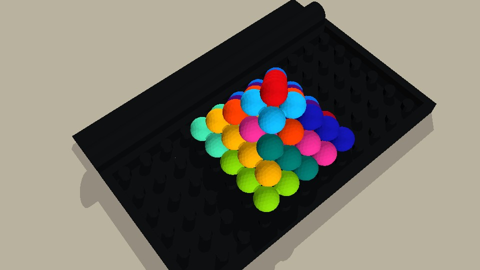
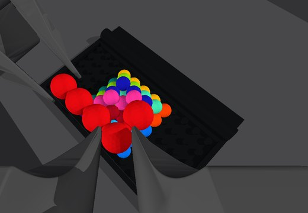
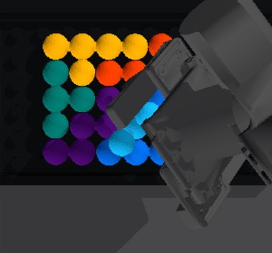

From camera images to a complete pyramid.
Two arms · 12 pieces · one connected policy graph
RGB + joint encoders + known geometry
RoboSimStudioReal to sim


{{VIEWS}}
-
{{CAMERA_FACTS}}
- Calibration
- Public mounts · declared pinhole model in sim
- Simulation
- RoboSimStudio · GPU physics · 50 Hz control
- Robot
- Two YAM 6-DoF arms, parallel jaws
- Parts
- 12 rigid pieces · 55 beads · 25 mm · μ 0.65
- Goal
- Within 4 mm · stable · hands home · hold 2 s
Graph-as-PolicyWatch the graph execute
{{PLAYERS}}checkedactiveerror → stop↻ bounded re-observationClick a shape or node to seek.
Why Cyan and Red change hands
{{HANDS}}Self-refinementEach trial improves a skill
Rehearse a skill→Inspect RGB + checks→Refine the module→Rejoin the full graph↻
Look around an occlusion 3 cameras

old rule2 vs 2
new rule3 vs 0
Make room to see the landing 4 cameras


Recognize the finished pyramid 4 cameras

Keep the next piece visible 4 cameras